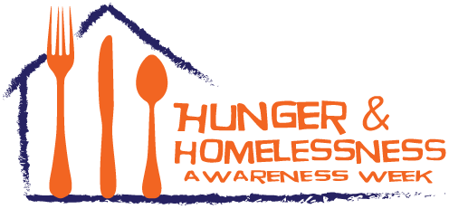
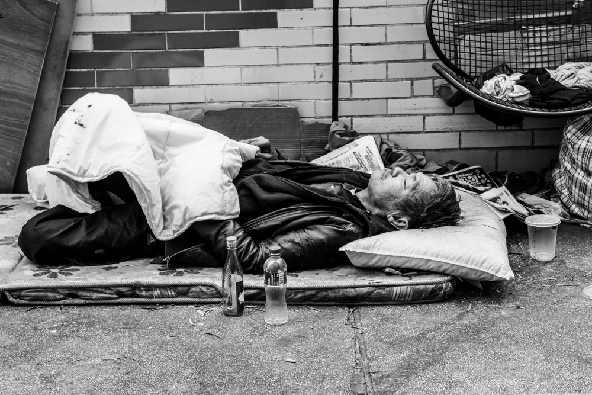
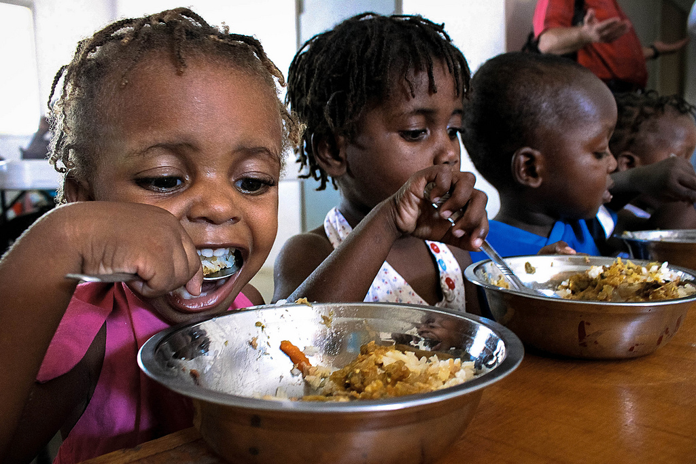
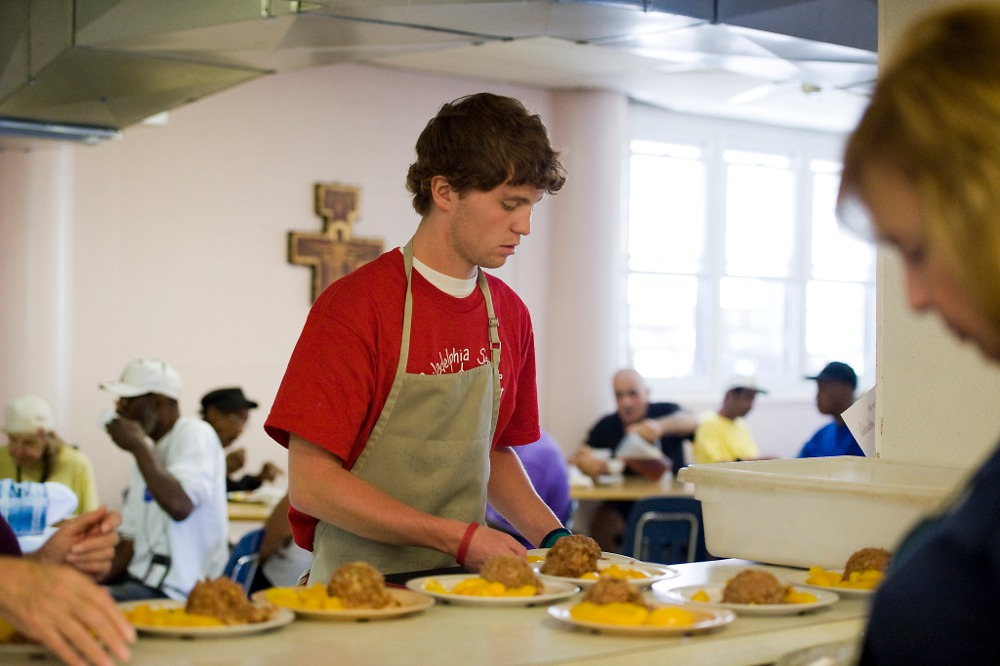
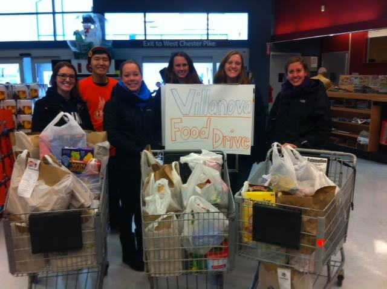
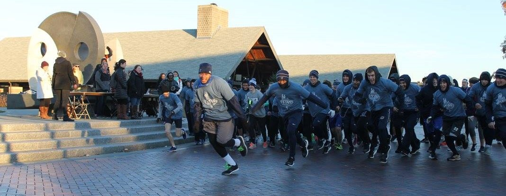

November 14 - 21, 2015
What is HHAW?
Hunger and Homelessness Awareness Week (HHAW) is an annual sequence of events scheduled the week before Thanksgiving. HHAW
strives to foster understanding to stand in solidarity with all those who experience hunger and homelessness,
and to take active steps toward achieving a world in which such realities no longer exist.
Initiated in 1975 on Villanova's campus, HHAW began with the support of dedicated and visionary students. Fr.
Ray Jackson, OSA, Founded HHAW with this student support under the principles of advocacy, service, and education.
HHAW is dedicated to advancing values of Augustine and of principles of Catholic Social Teaching.
Since 1975, HHAW has spread far beyond the borders of Villanova's campus. In association with the National.
Coalition for the Homless and National Student Campaign against Hunger and Homelessness, over 750 educational
communities across the nation now promote awareness throughout the week in November.

Who is Homeless and Why?
The homeless population includes people from all walks of life:
- In the U.S., more than 3.5 million people experience homelessness each year.
- On a typical night in 2014, more than 578,000 Americans were homeless.
- Nearly 2.5 million children in America experienced homelessness in 2013. That’s one in 30 children.
- In urban communities, people experience homelessness for an average of eight months.
People become homeless for a variety of reasons. Homelessness is primarily an economic problem, and is also affected by a
number of social and political factors. The number of people experiencing homelessness exploded in the 1980s,
as federal funds were withdrawn from low-income housing and social assistance programs for low-income families
and the mentally ill.

1 in 6 people in America face hunger and 49 million Americans struggle to put food on the table
As we enter the month of November, we begin to usher in the holiday season. Part of the reason why Hunger and Homelessness
Awareness Week is scheduled in November is because of Thanksgiving. It is important to take time to be thankful
for our food and our homes, but also reflect on the issue hunger and homelessness in the US since part of being
thankful is doing what you can to help others. Hunger in the United States is one of the most drastically misunderstood
issues.

11 Facts About Hunger in the US
- 1 in 6 people in America face hunger.
- The USDA defines "food insecurity" as the lack of access, at times, to enough food for all household members.
In 2011, households with children reported a significantly higher food insecurity rate than households
without children: 20.6% vs. 12.2%.
- Food insecurity exists in every county in America. In 2013, 17.5 million households were food insecure. More
and more people are relying on food banks and pantries.
- 49 million Americans struggle to put food on the table.
- In the US, hunger isn’t caused by a lack of food, but rather the continued prevalence of poverty.
- More than 1 in 5 children is at risk of hunger. Among African-Americans and Latinos, it’s 1 in 3.
- Over 20 million children receive free or reduced-price lunch each school day. Less than half of them get
breakfast, and only 10% have access to summer meal sites.
- For every 100 school lunch programs, there are only 87 breakfast sites and just 36 summer food programs.
- 1 in 7 people are enrolled in Supplemental Nutrition Assistance Program (SNAP). Nearly half of them are children.
- 40% of food is thrown out in the US every year, or about $165 billion worth. All of this uneaten food could
feed 25 million Americans.
- These 8 states have statistically higher food insecurity rates than the US national average (14.6%): Arkansas
(21.2%), Mississippi (21.1%), Texas (18.0%), Tennessee (17.4%), North Carolina (17.3%), Missouri (16.9%),
Georgia (16.6%), Ohio (16.0%).

How to get involved
Participate in an event at Villanova
| Date |
Event |
| November 15 - 16, 2015 |
Off Campus Food Drive |
| November 17, 2015 |
Screening of 'The Dark Side of Chocolate' |
| November 18, 2015 |
One Bread, One Body Reflection |
| November 18, 2015 |
Hunger Run 5k |
| November 18 - 19, 2015 |
On Campus Food Drive |
| November 19, 2015 |
Fair Trade Fair |
| November 20, 2015 |
Food Fast Day |
| November 20, 2015 |
Faces of Homelessness panel |
| November 20, 2015 |
Sleep Out |
| November 21, 2015 |
Keynote Speaker: Kevin Ryan |

Hunger and Homelessness Awareness Week commemorates the work of all those who, for forty years, have promoted advocacy, service, and education; and boldy asserts a new mission: that, 40 years from now, there will be no need for this campaign.